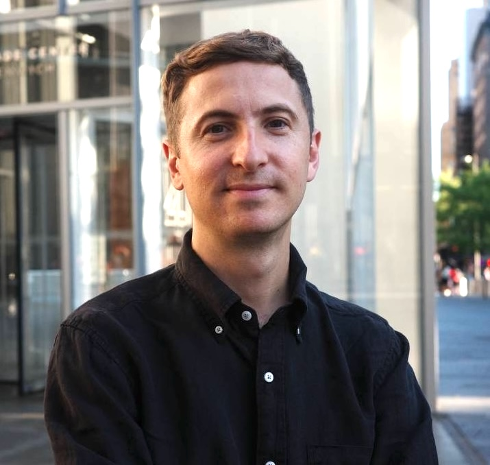

Less Stress and wellbeing programs
Build practical skills for stress and burnout through facilitated sessions and independent practice.
Facilitator / transformation and awareness
A group process facilitator and founder of deep mind consulting. He develops meta-skills through awareness and state work, helping teams act with greater resilience in complexity.

When overload, uncertainty, or change starts affecting trust, energy, and performance, and the team needs practical ways to restore capacity.
Build practical skills for stress and burnout through facilitated sessions and independent practice.
Bring participants back into contact with themselves, the group, and the real situation.
Develop the ability to lead from an emerging future, not only from familiar models.
Bring a transformational layer into a retreat, offsite, or team development program.
Approach
Max combines awareness practices, state work, and group process facilitation. The goal is not only to reduce tension in one session, but to help people build skills that continue working in everyday team life.
Max is a strong fit for retreats and team programs that work with group energy, leadership, and the quality of interaction at the same time.
View case studies